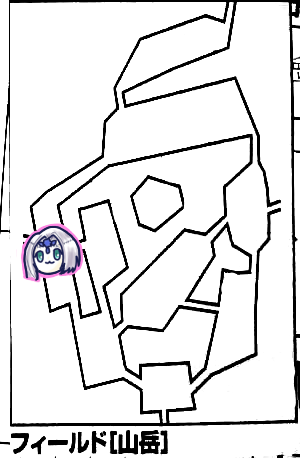

前回、騎士団でその場で受けてその場でコンプしたとされていた関所破壊依頼ですが、実はやってなかったことが判明したのでその分経験点と報酬を減らすことになりました。
ブルーローズ「レベルが足りるか心配です」
GM「相手のレベルが高すぎて敵わないってことはエターナル若干起こり得るんだけど、ミッションなんかはレベルキャップかかってるしまあ大丈夫でしょう。主の遭遇とか盗賊とか、実はもうあれ倒せるレベルなんだよね」
現在の状況。
・マギテック協会からローレンスへの手紙(1回目)を受け取っている
・ダンカン商会からのローレンス宛のお届け物(1回目)を届けた
どちらも街の依頼元に報告でクリアです。
・騎士団の関所の破壊クエストを受けている
・ハロルドミッションを2回完了してる
・ラプテラスの討伐が受けられる
ナナシ「お届け物多いな。佐川急便」
プレイメモに書き忘れてるぽいけどローレンスへのお届け物は届けたんだよねこれ…
ハロルドミッション3回目を受託。
GM「1d6お願いします」
ナナシ「4」
GM「4？振りなおさない？」
タッシュ「これはきっと近いな」
GM「山岳にあるきこりですね。山岳のどこかに集落があるんですが」
ピーター「よーく知ってる」
GM「きこりの妻の泣き虫セシリアってのがいるんですけどね、そこに届けてください。名前を忘れたら届けられません。またすげー近いところ選んだなーおいー」
タッシュ「まだ開けてないフィールド2つあるからね」

GM「イベントブルーローズお願いします」
ブルーローズ「はーい」
ナナシ「主は？」
GM「じゃ主お願いします」
ナナシ「やったれ主探知機」
ブルーローズ「はい、4です。イベントは2」
GM「なにも起きません」
「平和」
「探索しよう」
GM「どっち進みますか？」
ブルーローズ「東へ」
ナナシ「じゃ西へ」
GM「ネタバレをしておきましょう。主は東にいました」
「まじ探知機」
ブルーローズ「でも討伐ミッションがあるから」
みぞれ「受けてるっけ？あ、受けてなくても事後報告すればいいのか」
GM「受けてないというかミッションは2つ同時に受けられないね。事後報告でもいいけどミッションを受けることによって追加報酬があったりします」
というわけで西へ移動。

ナナシ「探索します、成功」
GM「1d6振ってください」
ナナシ「3」
GM「ナナシはトゲに刺されますよ、出血毒です」
みぞれ「あれ待って、今イベント何だった？探索する時に白い悪魔に注意しようと思ってたのに」
GM「忘れてた、タッシュ先生どうぞ」
タッシュ「3」
GM「猟師イベントです」
タッシュ「4」
GM「サイコロ振ります。1。ナナシに誤射が飛びます」
ブルーローズ「下手な敵より猟師の方が危ないよね」
GM「レベルが上がると猟師も強くなるからね。16」
ナナシ「20回避」
ブルーローズ「ブレードスカート発動する？」
みぞれ「するなｗ」
GM「しません」
猟師「あーすまんすまん、君が牡鹿に見えてねー」
ナナシ「あー血が出ちゃったなー」
ブルーローズ「余裕で避けてましたよ、それさっきトゲで刺されたやつじゃん」
猟師「さすがだねーセズウィックの盾さん」
みぞれ「知られてる」
ブルーローズ「わかってて狙ったのでは」
猟師「今気付いたんだよ」
みぞれ「あれ無料チケットは？」
GM「これはもらえません」
みぞれ「やられ損」
ナナシ「キュアポイズンで毒治りますか？」
GM「治ります」
ブルーローズ「キュアポイズンってMPいくつだっけ」
ナナシ「プリーストじゃないからわかんなーい」
治療して北西へ移動します。

ピーター「イベント4です」
GM「山岳イベントですね」
ピーター「落石以外で！4」
GM「崖に刻まれた細い道を進まなければならなくなった。18で冒険者レベル＋敏捷ボーナスで判定お願いします」
タッシュ「無理」
みぞれ「これ魔動バイク収納した方がいいよね、出し入れ1点だっけ、じゃこれ終わったら出すってことで2点減らしておきます」
ブルーローズ「全員でベルトを結んでいけないかな」
GM「それなら誰か1人が判定すればいいよ」
ナナシ「16」
GM「全員失敗」
ピーター「ケンタウロスレッグ使った方がよかったね」
GM「16mの落下だから48点ダメージ、達成値分だけ減らすからー」
みぞれ「わたしリトルウィングっての持ってます」
タッシュ「落下しながら呪文って使える？」
GM「レビテーションは使えるだろー、あとなんだっけ」
ピーター「ホバリング」
GM「んー、いいや、どっちも使っていいです。発動判定して失敗したらぴちゃってしてください」
タッシュ「じゃレビテーション」
GM「これ対象者のみか」
ピーター「ホバリングもでーす」
両方成功しました。
GM「48点から受け身判定の達成値と装甲値引いてください」
ブルーローズ「これベルトに結んだロープはどうなったんだろう」
GM「切ったんじゃないかな、そうじゃないと個別判定できないし」
みぞれ「処理めんどいからそういうことにしておきましょう」
崖崩れの後処理、自由行動。
ブルーローズ「ナナシと自分にキュアハート2回ずつ撃ちます」
ナナシ「あー、1回でいいよ、どうせ避けるし」
北へ移動。

GM「みぞれお願いします」
ナナシ「先制判定準備しておくかー」
みぞれ「5、あー崖崩れきちゃうー、イベントは4、あっ」
GM「細い道パート2です。達成値16」
ナナシ「さっきと同じ方針で、ケンタウロスレッグ使います」
GM「ケンタウロスレッグって持続時間どれぐらい」
ナナシ「あ、1ラウンドだ」
GM「10秒だな、それは無理だ」
ナナシ「じゃバフなしで。16。ほおおお」
GM「どっちに行きますか？北と南東と南西に道があるけど
ナナシ「南東かな」
みぞれ「北でしょ」
北へ。

ナナシ「2、なにもない」
「主の行動は」
GM「主まだ動きません」
ブルーローズ「集落、10件ぐらいしか家がないからうちらここにいる半数ぐらいの人に誤射されてない？」
ナナシ「みんな目悪いよね基本的に。レーシック手術受けた方がいいんじゃない」
みぞれ「ななっしー探索しなくていいの」
ナナシ「後でいいかなー」
ブルーローズ「レミングの歯探さなくていいの？」
ナナシ「しゃーないなー、じゃ探索ー」
GM「レミングの歯が見つかりました」
タッシュ「期待にこたえなくてもいいよ」
集落へ移動。
ブルーローズ「こちらにセシリアさんという方は」
木こり「おーおるおる、そこの3軒目の家だ」
GM「セシリアさんは旦那が猟師で出かけるので無事を心配して毎日泣いています」
「猟師の妻として向いてない」
ナナシ「離婚すればいいのに」
みぞれ「こんにちはーってドアをノックします」
GM「出てきたセシリアさんが旦那と間違えてみぞれに抱きついてきます。『あの人じゃない！』がくがく揺さぶられます」
ブルーローズ「バニシュ」
タッシュ「やめてください」
ブルーローズ「サニティで。成功」
セシリア「よく見てみたら冒険者さん、なんでしょう？宿ですか？それとも解毒薬が必要ですか？」
ナナシ「ハロルドからのお届け物です」
GM「受け取ってもらってサインをしてもらいました」
ナナシ「旦那のことを愛してるんですね」
セシリア「とってもとってもとってもとっても！今どこで何をしているのかも分からないんです。山岳のどこかにはいるはずなんですが」
ブルーローズ「そういえば我々を誤射してきた猟師が一人」
ミッション達成したので村へ戻ります。
GM「素早くお届けをしたのでハロルドの店の評判が上がりました。商業値が3上がりました」
みぞれ「今になって」
GM「フィールドに到達した、無事に届けた、早く届けた、村に戻った+2で☆5つ、合計1000点の経験点が入ります 。報酬は一人2400G、レベルが上がったので報酬も上がってます」
商業値が20を超えているので職人工房が建ちました。
総合値66なので工房には職人を2人招くことができます。
50を超えてから10点溜まるごとに1人呼べるそうな。
1人目が工房長で、アルケミストワークスp64-65の一般技能から1つ選べます。
最初は5レベルで、新しく職人が来る度に1レベルあがるとのこと。
つまり最初に呼んだ奴が一番レベルがあがるシステム。
アイテム作らない奴をフレーバーで呼ぶのは可。て感じのようです。
ブルーローズ「職人呼んだら何かいいことあるんですか？」
GM「アルケミストワークスの加工ルールが使えます。というわけでレベルアップ処理、職人の選択、あと自宅欲しいって言ってたよね、その辺の処理しましょう」
みぞれ「自宅！欲しい！」
GM「ちなみに娼婦街が作れないのでこのシステムで作ろうとした奴らがいましたね」
相談した結果、工房長はメイソン、2人目はウェポンスミスになりました。
ハロルドにミッション報告します。
GM「イラボスの楽譜を売ってもらえるようになりました。1000Gになります」
ナナシ「じゃパーティー財布から出しときますねー」
現在受けられるミッション：
・廃都の探索
・ラプテラスの討伐
・コカトリスの討伐
・マギテック協会から、新型運搬用魔動機の実験
・ライダー協会から、餌の調達
・各フィールドの討伐。これは経験値稼ぎのためのミッション。
主も経験値稼ぎミッションだけど討伐とは違って達成値も上がる。
ナナシ「廃都の探索は場所指定必要？」
GM「いらないです」
ナナシ「じゃあ受けましょう」
GM「さあ、3年ぶりに見て欲しい。君たちの右手には刻印が刻まれている」
ブルーローズ「新陳代謝でもう消えてないですかね」
GM「この刻印が5つ揃うと君たちはエターナルへ行ける」
ナナシ「なんかエターナル感出てきましたね」

草花の生い茂る丘陵地帯です。北が崖になっています。
GM「ではブルーローズ、主の居場所を振ってください」
ブルーローズ「5です。イベントは3」
GM「風のいたずらイベントです。追加で1d6どうぞ」
ブルーローズ「えっと、ナナシのブレードスカートがめくれる…っと。5です」
GM「強烈な風が吹き荒れる！生命力判定をどうぞ」
ピーター「ころころ。…あっ振っちゃった！？ウィンドガードしようと思ったんだけど、まあいいや」
ブルーローズ「レジスタンス前奏ないな、歌っていいですか？」
GM「いいよ」
ブルーローズ「成功！生命力+1してください」
タッシュ＆ナナシ「ギリギリセーフ、歌がなかったら死んでた」
ブルーローズ「救ってしまった」
北の壁を調べることになりました。
ナナシ「探索判定18です」
GM「人が通れそうな亀裂があるのを見つけます」
みぞれ「登攀判定いりますか？」
GM「いらないです。幅は3mほど。明かりが必要です。傾斜のある洞窟って感じ」
みぞれ「あーじゃ中に入って上っていく感じか。行ってみる？てかこのフィールド高さどうなってるの？北側の3つのエリアが高い感じ？」
GM「そうです」
協議の結果、まず低い方の南側のエリアを重点的に探索することになりました。北側はなんか主がいそうだとか何だとか。

GM「ところどころに陥没した穴がある丘陵地帯です。タッシュ先生イベントをどうぞ」
タッシュ「3」
GM「風のいたずらイベントです」
タッシュ「2です」
GM「透き通った女性の歌声が聞こえてくる！」
ブルーローズ「びびびー」
みぞれ「対抗するなそこ」
GM「どんな歌かを決めるので振ってください」
タッシュ「2」
GM「優しく大きな存在によって守られているのを感じます。以降、最初に行う生命・精神・生死判定に+2。これはマスター側で記録しておきます」
ブルーローズ「やったー」
GM「自由行動をどうぞ」
みぞれ「ここは特別に調べるようなところはない？」
GM「ないです」
ブルーローズ「このえぐれてる穴は？」
GM「調べていいよー」
みぞれ「なんか出てきそうだなー」
ナナシ「じゃ穴調べます。17」
GM「ここは地震が頻発しててその影響でできた穴っぽいですね。これにより、セージ技能で15出すと地震を察知することができます。成功するとイベント表から地震を削除します。ちなみにこれ生命抵抗力判定に失敗すると2d6+16のダメージをくらいます。受け身もできません。地震に警戒しますと言えばOKです」
みぞれ「宣言いるんだ」
GM「白い悪魔と一緒です」
「なるほど」
東へ移動。

GM「北と東にある崖で囲まれたエリアです」
みぞれ「以前の記録によると、北の方が東の方よりも高い、とあるね」
GM「あーそれエラッタです。北側はこのエリアより上にありますが、東側はこのエリアより低いです。ではイベントをお願いします。今回はまだ戦闘もなくて平和ですがどうでしょうか」
ピーター「フラグ立てないでください。1、セーフ」
ナナシ「これ黒ひげ危機一髪みたいになってきたな」
GM「崖を進むならは登攀判定20m、更に風が吹いてて合計-8のペナが付きます。ベースが10なので計18ですね」
みぞれ「東は登攀判定いらないんだよね？」
GM「いるいる、東がいる」
みぞれ「あれ間違えてメモってたか」
ナナシ「東行くか」
ピーター「豆の木使えます？」
GM「豆の木はロープの代わりになるって書いてあるから+2のボーナスが付くね」
ブルーローズ「ウィンドガードで風無効にできる？」
GM「使うなら-2ペナが消えますね」
ナナシ「俺先に行くわ」
ピーター「それじゃウィンドガードをナナシにうちます。成功です。豆の木も伸ばします」
ナナシ「あ、これ北に行く方がよかったのか、俺が先に上に行って引き上げるつもりだったのにノリで東行くって行っちゃった」
ブルーローズ「上から私がうさちゃんを吊り下げてナナシにキャッチしてもらう」
ナナシ「じゃ先行きます。成功」
ブルーローズ「ロープを20mにしてうさちゃん結んで上から…あ、これ命綱にしてうさちゃんに降りてもらおうかな？」
GM「その方が上の人の負担が少ないよね、補助で+4つけましょう」
ピーター「14、いけました」
みぞれ「降りまーす。17、成功」
ブルーローズ「うさちゃんに下でロープほどいてもらって上で回収するから次みぞれちゃんに」
みぞれ「あ、ごめん、もう降りちゃいました」
ブルーローズ「じゃあタッシュ先生に命綱付けます」
タッシュ「13、降りました」
なんかブルーローズの判定メモってないけど特に何事もなく降りられたと思われます。
崖を降りた後は洞窟を通って東側のエリアに移動したんだったかな？
明かりが必要と言われたのでタッシュ先生が久々のぺかーをしました。
GM「四方が崖に囲まれている谷底です。箱庭のような場所で、陽光がさしています。北西に通路が見えます。通路は坂になっていて上へと続いています。ではみぞれ、イベントを振ってください」
みぞれ「4」
GM「台地イベント表です」
みぞれ「5、あ、地震警戒してない」
GM「あれはあの陥没している場所だけです。穴があるとか言う表現には注意してください。で、そこでは10代半ばぐらいの少女がぼーっとしています。少女は君たちをみてにこりとほほ笑みます」
ブルーローズ「や、やっほー？」
GM「『ここにも冒険者が来るようになったんだねえ』古臭い言葉をしゃべります。我々からしたら大正時代ぐらいの言葉」
ブルーローズ「あなたはここで何を？」
少女「わしは旅の占いババアだ」
ブルーローズ「ばばあ…？」
GM「少女には角がありましたた。ナイトメアですね」
ブルーローズ「仲間…！」
少女「よかったら占ってやろうか？100Gでどうだ？」
ブルーローズ「じゃあ占ってもらいましょう」
GM「占いの結果はパーティー全体になります」
みぞれ「ブルーローズの結果を見てから自分も占ってもらおうかなと思ったのに」
ブルーローズ「どうする？パーティー財布から出しますか」
少女「よかろう。ではお前らのパーティー名は」
全員「…………」
少女「どうした？何を固まっておる？」
ブルーローズ「まだ決まってないんですよね…」
とりあえず『セズウィックの盾』で行くことになりました。
少女「ほほう、あのセズウィックの。そしてお前はナイトメアじゃな。お前らの評判が上がればナイトメアの地位も上がるかもなあ」
ブルーローズ「任せていただきたいですわ！」
GM「では名誉点70点ぐらい払えばセズウィック村では差別を受けないことにしましょうか」
GM「では占いをします。ブルーローズ1d6を振ってください」
ブルーローズ「5」
少女(以降占い師)「おお！今日は吉と出ている。探し物よく見つかれり、だ。探索判定か結果のどちらか+1できる。効果は1日」
ナナシ「この辺にエターナルの廃都があるという話を聞いたことはないか」
占い師「聞いたことがあると言えばあるしないと言えばない。ナイトメアだと情報を集めるのも苦労してな。うまい酒と食事が欲しいなあ、ローブも買い替えたいなあ(手を差し出す)」
ナナシ「いくらだ！」
占い師「100Gだ！あとうまい酒と食事が欲しい」
ブルーローズ「調理セット持ってる」
ナナシ「安い肉があるよ」
GM「調理はレンジャー技能で判定できます。一般技能のハウスキーパーとかでもOKですね。ちなみに調理セットなければ-4ぐらいペナ出しますよ」
ブルーローズ「ブルーローズは最初のキャラメイクの時から持ってますよ。必要でしょう！？と思って」
GM「読みがすごい。ではレンジャー技能＋器用でお願いします」
みぞれ「ほい、じゃ調理します。成功」
占い師「これはうまい！酒もくれ！」
みぞれ「うさちゃん確か酒の種みたいなの持ってたよね」
ピーター「持ってます！使います」
GM「酒の種なら申し分ないです」
占い師「これはうまい！」
ナナシ「うちのうさぎドランカーなんで」
占い師「では言おう。遺跡はある。確実に存在する。確実な場所を知っている場所ではないが、占いによると、水に関連する場所にある」
みぞれ「ああーーーやっぱり北側だったーーーどう見ても北西のエリアじゃーん！てことはこの謎の表示は水なんだ」
重要な場所は後に残していくスタイルになりました。
ナナシ「じゃあな、おばあ」
みぞれ「おばあはここに住んでるんですか？」
GM「おばあはフィールド全域をうろついています」
ブルーローズ「行く先々で出会うのか」
占い師「占いは1日1回だ、また日が変わってどこかで会ったらまた100Gで占ってやろう。ところでナイトメア、お前の名は」
ブルーローズ「ブルーローズですわ！もしよろしければセズウィック村にいらっしゃいませんこと？」
占い師「ふむ。ではナイトメアの地位が向上したらセズウィック村に引っ越すとしよう」
みぞれ「おばあの名前を聞きたいです」
占い師「今はまだ名を明かす時ではない」
みぞれ「意味深！」
占い師「そこの輝ける鉱石の男よ、お前の名は」
タッシュ「タッシュです」
占い師「気をつけよ、お前には凶相が見える」
みぞれ「アンデッドなジェネラルみたいな感じですか」
占い師「アンデッドジェネラルと会ったのか、それでそのような禍々しい気を…お前一体何をしたんだ」
タッシュ「色々ありまして」
占い師「気をつけよ。アンデッドジェネラルはフィールド外にも影響を及ぼす。アンデッドと遭遇した場合、アンデッドがお前を狙える場合は必ずお前を狙う、そういう呪いがかかっておる」
ブルーローズ「それってリムーブカースで解けないんでしょうか？」
みぞれ「確かそれレベルが圧倒的に足りなかった記憶がある」
GM「惜しむらくはこのばーさんに会う前にアンデッドに遭遇してないんだよねー。謎にボコボコにされるタッシュ先生見たかった。あ、これ挑発攻撃は超えないからね、ルールは超えないので安心してください。てことでBBAは去りました」
移動。
フィールドの最北西に向かいたいわけですが、未知のエリアにも行ってみたいわけです。でも現在判明しているルートだと遠回りになります。
しかし未知のルートがあるかもしれない、というかありそうなので、北西方向の未知のエリアに行くことになりました。
GM「北西へ移動する上り坂は洞窟です。そして到着したエリアも洞窟です。もちろん暗いです」
タッシュ「タッシュライトで照らします」
GM「タッシュライト範囲どれぐらい？」
ナナシ「俺暗視持ってるけど」
みぞれ「私も持ってるけど」
タッシュ「たいまつと同じぐらいらしいけど。半径10m…明るすぎじゃない？」
GM「ではこのエリアに入った辺りで刺激臭がしてきます。イベントをナナシ振ってください」
ナナシ「5」
GM「洞窟台地イベント表があります。もう1回お願いします」
ナナシ「6」
占い師「またお前らか。お前らわしのこと好きだろ」
全員「ｗｗｗｗｗ」
占い師「占ってやりたいところだが1日1回だしな。わしにできることはないな。じゃあな！」
GM「占い師は去っていきます」
みぞれ「待って、ここから北西のエリアに抜ける道があるか知らない？」
占い師「知りたいか？100Gで教えてやろう」
ナナシ「探索で分かるでしょ」
みぞれ「確かに」
GM「では占い師は今度こそ去っていきますよ」
みぞれ「これ何をどう調べればいいの？」
GM「内側からなら全部わかりますねこれ。北西へ抜ける道があります」
「おー」
GM「あと北東と南にも行けます」
みぞれ「南は分かってたけど北東も行けるんだ」
ブルーローズ「未知の場所行きたいなー、ここから北東に行ってからぐるっと回って北西に行くの」
みぞれ「んー遠回り甚だしいなー、この中央エリアから西側っていけないのかな」
「調べてみないとわからんな」
GM「北東への通路は2人しか並べないような幅になっています」
隊列を決めました。
GM「途中バイソンの死骸が見つかりました。まだ新しいです。ばーさんがこの道を通っていくついでに倒したようですね」
「つよい」
GM「エリア中央にこんもりとした丘が盛り上がっています。丘の上に大きな岩が折り重なっている岩場があります。岩は人工的に切ったんだろうなって感じです。北側は絶壁です。ではイベントをどうぞ」
ブルーローズ「5」
GM「台地イベントです。再度どうぞ」
ブルーローズ「5」
GM「岩の上にさわやかな風が吹いている。その上に一人の少女が」
占い師「またお前か。ストーカーなんじゃないのか？」
ブルーローズ「さっきのバイソン、あれはおばあさんが？」
占い師「あそこの通路はよく怪物が出るんだ。わしも冒険者のはしくれ、これぐらいできなければな」
特に建設的なことをするわけでもなく占い師は去りました。
ナナシ「岩場を調べます。21」
みぞれ「つよい」
ブルーローズ「だいぶ真剣に調べてたねばーさんの座ってた後」
GM「ばーさんの座っていた場所が横にずれることがわかりました。ここには人工的な通路があります」
みぞれ「北側を探索します。16」
GM「北側には何もないことがわかりました」
みぞれ「ないんだ」
「それじゃ通路いきますか」
タッシュ「明かりつけます」
GM「通路の幅は3mぐらいです。まっすぐ行って上り坂になっています。進みますか」
みぞれ「この道、どっちに向かってるかわかりますか」
GM「セージ技能で判定してください」
ピーター「23」
みぞれ「つよい」
GM「北に向かってます」
みぞれ「崖の上に行けるのか、これこの先に主いなかったらそのまま最北西に行けるかも」
ブルーローズ「行ってみよっか」
みぞれ「…今マスターが行こうって言ったことで、なんかフラグ立った気がします」
GM「急こう配の坂を上っていきます。すると暗くじめじめした地下室へ出ました。そこにはタッシュ先生のような光を放つ者がいます。いえ、これは光を反射しています。というわけで怪物です。この怪物の後ろに階段が見えます」
GM「ではいきます。魔物知識判定から」
ピーター「光ってるやつ1体だけですか？23」
GM「1体だけです。LV6モンスターミラーゴーレムです」
「LV6？」←プレイレポさぼってて完全に忘れたけどこの時の我々のレベルからしたら格下扱いです
GM「こいつボスモンスターじゃないですがかけらが刺さってます。6本・3本ずつです。今回オープンにします」
ブルーローズ「でもね、我々の敵ではありませんよ。倒してしまっても構わんのだろう？」
みぞれ「それはいいんですがこの後のことを考えるとね…ここを出たらベラドンナがいて傷のある人に何点ダメージとか嫌ですよ」
ナナシ「先制取ったぞ」
ブルーローズ「接敵、魔力撃トンファーキャッツアイで、19」
GM「14．むりー」
ブルーローズ「はい。31点」
GM「いてーな」
ブルーローズ「追加攻撃します。20」
GM「17」
ブルーローズ「32点」
GM「ぱきゃーん！破片が飛び散ります。近接ダメージを受けると1d6点の魔法ダメージを返します」
ブルーローズ「あ、これ2d分ダメージ受けますね、9点…これじぶんで振っちゃってよかった？」
ナナシ「接敵してウィップで挑発攻撃します。18」
GM「14」
ナナシ「13点ダメージ。続いて攻撃します、20」
GM「14．出目は悪くないんだけどな」
ナナシ「15点です」
GM「頭に絡まりました。破片ダメージ…1くらってください」
後衛3人「チアでいいかな」
GM「じゃミラーゴーレムの攻撃。ナナシを狙い打ちます。19」
ナナシ「同値回避」
みぞれ「これブレスカ入ったら1d6点ダメージ入るんですか」
GM「入るよ」
ブルーローズ「じゃトンファー魔力撃キャッツアイで！えいや！22」
GM「15」
ブルーローズ「33点」
GM「破片ダメージ2くらってください」
みぞれ「さっきから1か2しか出てない」
GM「ブルーローズはいい点数出してくれたのに」
ブルーローズ「続けていきます！20」
GM「14」
ブルーローズ「33点！セズウィックの青いバラとは私のことよ！」
GM「断末魔破片ダメージをくらえ！5点」
ブルーローズ「いた！いたたたた！」
みぞれ「ミラーゴーレムさんの激しいツッコミが」
剥ぎ取りタイム。
ブルーローズ「キュアハートします」
みぞれ「ななすぃー魔香草いる？」
タッシュ「MP減ってるように見えるね」
ナナシ「俺MAXMP13だよ」
みぞれ「つよい」
ナナシ「もータッシュ先生てば無尽蔵だからってー」
ナナシ「探索します。成功」
GM「君たちが倒したもの以外に3体のミラーゴーレムがいます。剥ぎ取れるよ」
剥ぎ取りました。
GM「ミラーゴーレムを倒したことで星が1個手に入りました。これによって何かが起こったと思ってください」
GM「階段を上り切るとそこは神殿の礼拝堂でした。奥にたおやかな女性像が安置されています。月神シーンの女神像です。本来は3階建てだったが2階から上が破壊され夕日が差し込んでいます。辺りは手入れもされておらず雑草まみれです。そこに身長5mほどの人型の怪物がいます。あれは人の形を模しているだけだ。君たちの方に振りむくと草がものすごい勢いで君たちに向かってくる！」
ピーター「セージ判定18」
GM「弱点は抜けませんでした。お察しの通りベラドンナです。主です」
タッシュ「LV12…うん、無理だねこれ」
みぞれ「回避14ｗｗｗｗ」
GM「ブルーローズとみぞれがいい伏線張ってくれました。主がいるんじゃないかって」
タッシュ「逃げます」
GM「逃亡判定、モンスターレベル+2d6です。ころころ、はい20。2d6+冒険者レベル+敏捷で判定してください」
全員失敗。
ナナシ「いちたりない。指輪割ります。成功」
GM「10点。低い…これは魔法ダメージです。そのまま減らしてください」
GM「ではエリアを1つ戻ることになります」
ブルーローズ「シャドウとしては取り返しておきたいね」
みぞれ「シャドウなんか関係あるの？」
ナナシ「月神シーンはシャドウを作った神とされてるから」
タッシュ「イベント振ります。4」
GM「台地イベントです」
タッシュ「2」
GM「ババアじゃないってことが確定しました。危険感知判定してください」
ピーター「ファンブル…」
GM「今回初ファンブルおめでとうございます！」
ピーター「10点もらえたわー」
GM「じゃ目標値決めます。14」
ブルーローズ「失敗しました」
ピーター「ファンブルじゃなければいけた」
GM「タッシュ先生は毒が効かないので除外します。ブルーローズとピーターは1点ダメージ、出血毒を受けてください」
みぞれ「ここにもいるんだ」
GM「白い悪魔出張版」
ブルーローズ「娘ちゃーん痛かったよー(リアル娘を愛でながら)あー癒されるーこれでもう毒も癒されたんじゃないですかね？」
GM「そんなことはないです」
ブルーローズ「毒治しとくか」
GM「目標15ですよ」
ブルーローズ「キュアポイズンを自分とピーターに。はい成功」
西へ移動。
GM「石碑がたくさんある丘です。イベントをどうぞ」
ピーター「4」
GM「台地イベントです」
ピーター「1」
GM「見たことのない花が咲いている。もっかい1d6、不思議な花表を振ってください」
ピーター「5」
みぞれ「赤い花がー？」
ナナシ「白い悪魔がー？」
GM「ラベンダーのような紫の花から香りがただよってくる！失敗すると寝ます。精神抵抗判定、16を目標にどうぞ」
ブルーローズ「レジスタンス歌いたくなってきた、らららー♪精神抵抗+2になりまーす」
GM「そう言えば大きな力に守られてる効果がありました。更に+1で判定してください」
全員成功。
みぞれ「確か前回来た時に石碑の下の通路を2つ見つけてたはず。何も書かれてない石碑か、慈愛がどーのと書かれている石碑か」
「それじゃ慈愛の方行きましょ」
GM「下に迷宮が広がっています」
「！？」
GM「遺跡です。というところでキリがいいのでここで今日は切りたいと思います」